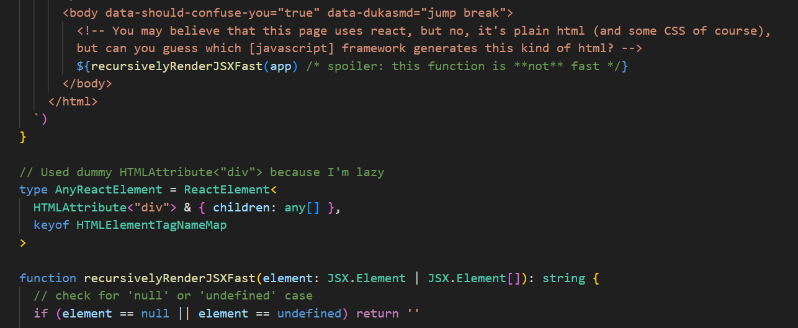
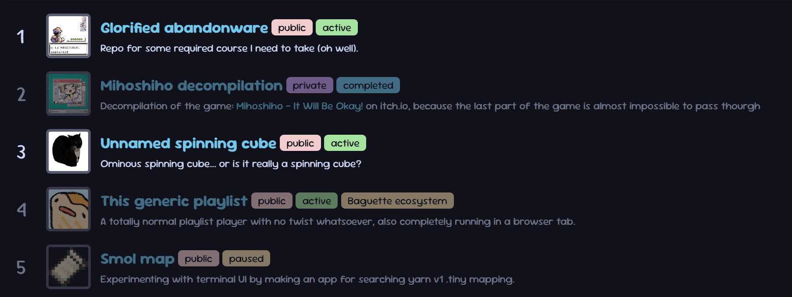

Uhhh-
This is a 1-week hacked-together project for Introduction to CSS3 - a required course that I have to do.
How can you even write all of this?
Magic.
Yeah, magic, honestly.
I wrote a JSX to HTML5 renderer for myself, it was very fun to write the code to handle edge cases. To make it more suspicious, I named the libary: haxjsx2html5.

Of course, disclaimer, it's not production ready, maybe I might find a crazy arbitrary code execution in the code handles the HTML rendering that can steal your bank account. (Uhhh- maybe not?)
Project appear to be... disabled?
If you're reading the description on the header at the top... yeah, just a prototype. Most of the project listed in the page is simply "disabled".

I still consider to move it onto a seperate repo, maybe soon?
(I really love @view-transition, but firefox currently does not support that).
You still want to check this black magic?
Everything is in glorified-abandonware repo, you can spy on what kind of ritual I am doing in the... commit messages :)
For this one, it's in:
- Output html:
docs/04-duck-project-index - Code for this page:
scripts/04-duck-project-index